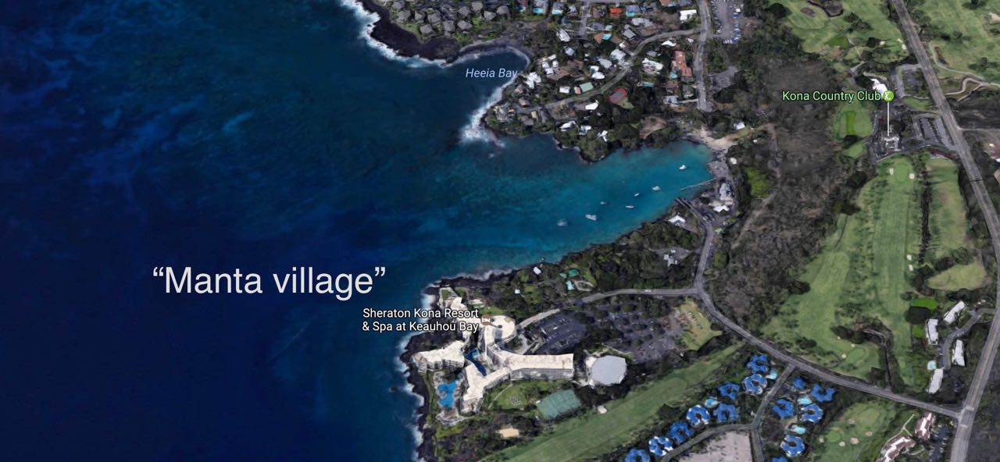
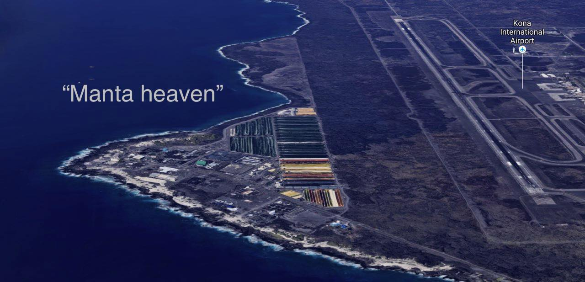
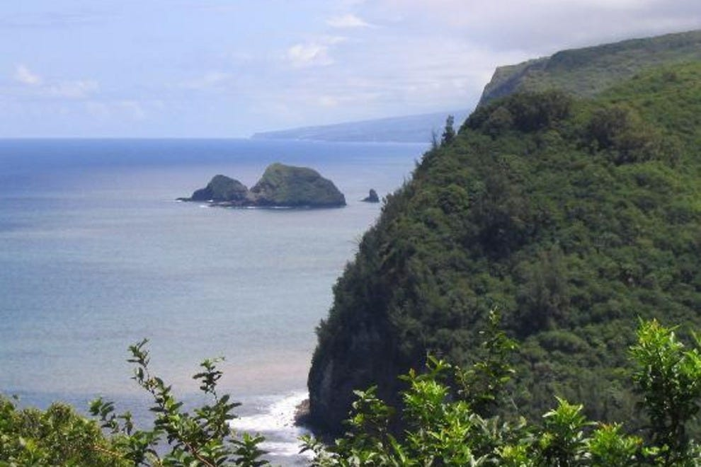
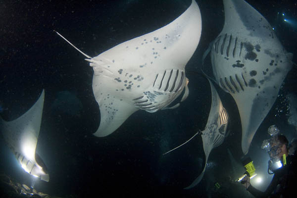

Top 3. Manta Night Dive - Kona, Big Island,
Hawaii
Location: Kona which is West coast of the Big Island, Hawaii
Manta Village (South of Kona)

Menta Heaven (North of Kona)

Kohala Coast (Near Waikoloa)

 Basic information:
The manta rays in Hawaiian waters are from the Mobula alfredi species, which is the second largest species
of
manta in the whole world. The average of manta rays one will be able to see around Kona is about 12 ft.
The Manta ray night dive is a unique experience for the Kong Coast and also one of the top night dives in
the
world. At night, divers will be able to swim with Manta Rays which feed on microscopic plankton attracted to
diver's light. This is also why night dives are called "Dinner Time" for Manta rays. You will also get a
chance
to come close with these creatures during your dive, and they can come as close to you as a nose-length!
Visibility: Average 30 meters in Kona Island but less during night time Diving difficulty (add stars graphics): open water certificate required